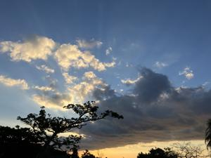

うるがいの話 ある日
最新: 断水【うるがいの話 ある日】とは 一日だけのプログです
『うるがいの話』の最新一日だけのプログで、通信料が少なく経済的だ。カニの画像をクリックすると全ての日付が載る『うるがいの話』サイトを表示します
|
|
【うるがいの話】 うるがい(ｳﾙｶﾞｲ urugai)とは、『もずくがに』の名前でとても大きくなります。 |
|---|---|
|
|
【カミマヤーの話】 猫のことを方言でマヤーといいます。カミマヤー（kamimayaa）とは、神の猫のことです。 |
|
【たながぁの音楽】 たながぁ（ﾀﾅｶﾞｰ tanagaa）とは手長えびのことで、何種類かあり大きいのは車 エビぐらいになります。 |

|
【ぶながぁの話】 ぶながぁ(ﾌﾞﾅｶﾞｰ bunagaa)とは、赤い髪の毛、赤い身体、そして身長は１ｍ２０ｃｍ ぐらい、川の蟹を食べているの目撃された。場所は沖縄県国頭郡大宜味村のと ある村僕の隣近所に住んでいる爺さんから、聞いた話です。 |
|
|
【ギーマの話】 ギーマ(giima)とは、山原の里山に咲くスズランに似た、 花を付けます。実は食べられます、 気が付くと口の周りが紫になっています。 |
2025年11月25日 (火）断水
16:15

ジョギングしていると『１８時から断水します』と防災スピーカ
ーで放送された。お！と、断水するまえにといつもの半分で家に
帰る。１８時前に風呂に入る、しばらくして『１９時半から断水
します』と変更された。外出中の子供に『１９時半から断水する
ヨ！』と連絡を入れた。子供が帰ってきたのは２０時半、断水は
まだしてなく風呂へ入る。夜、１１時前から断水、朝５時前に起
きて断水をチェック、まだだ。空になったトイレの水槽タンクに
風呂にためた水をバケツへ入れ、水を貯める。数回この作業をし
ていると、古くなったバケツはとってから壊れてしまった。お！
朝の５時ですヨ、別のバケツで作業を続ける。断水が、解除した
のは１２時前だった。
２年前までは貯水タンクがあったので、今まで断水を経験したこ
とがなかったが・・・。お隣さんたちも、みんな貯水タンクを撤
去している。停電と断水、どちらかが影響が大きいか？、断水で
しょう、いやー、どっちもどっちだ。
で、もう一度貯水タンクを設置するか、ウーン、悩ましいところ
である。